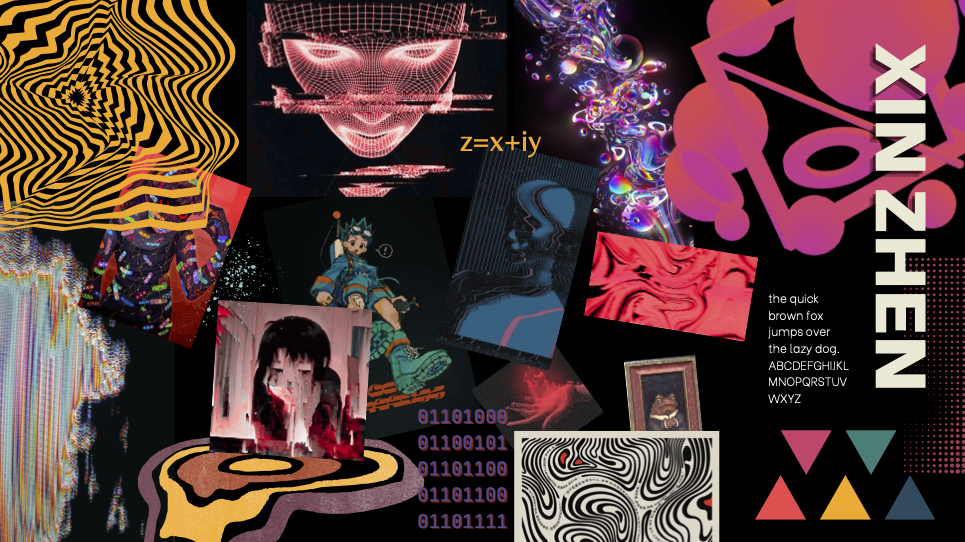
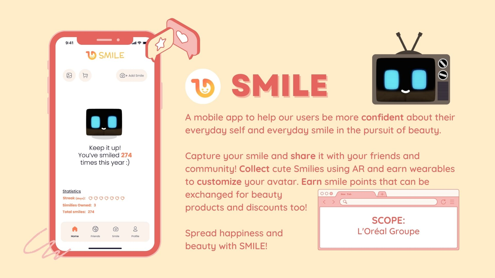
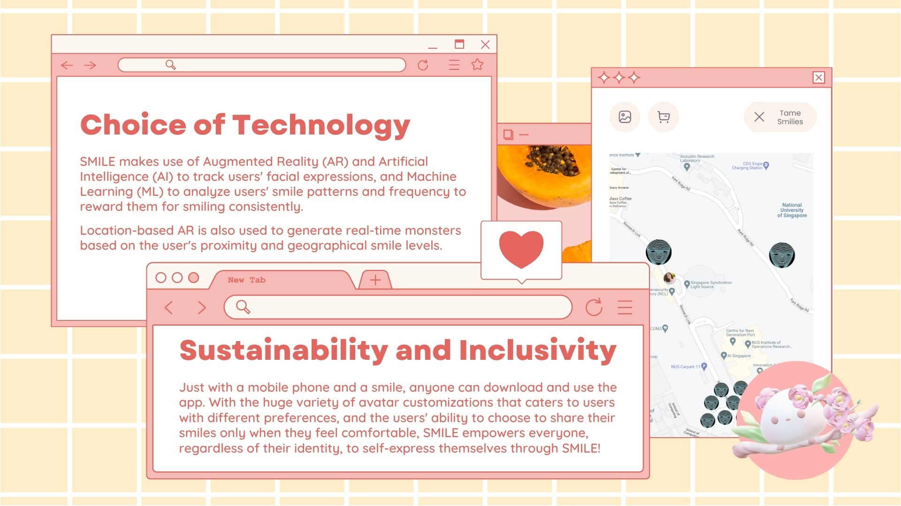
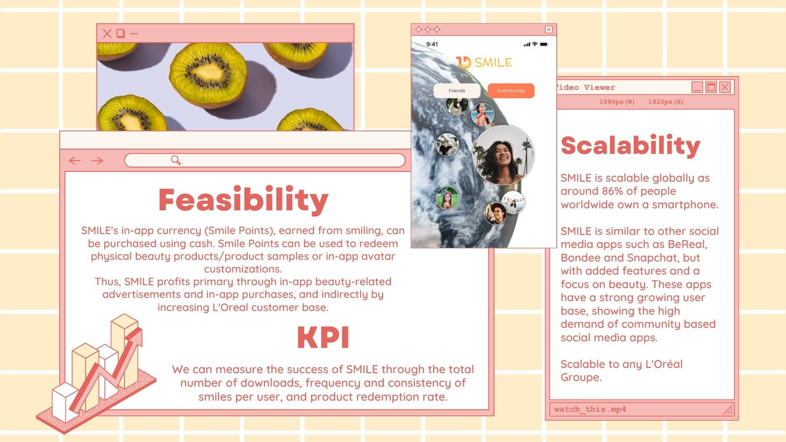
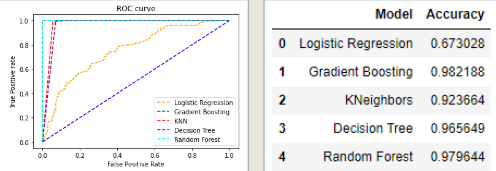
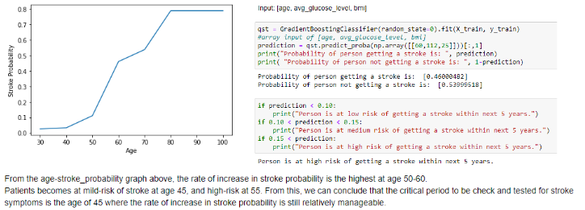

Ho Xin Zhen
Hello! I'm a Singaporean student majoring in Information Engineering and Media at Nanyang Technological University.
Some languages I know are: Python, C, Java, HTML, CSS, PHP, SQL, JS. I like to learn new things and try to excel at what i'm interested in. The arts and sciences are fascinating to me.
Email:
hoxinzhen@gmail.com
For the final project of this mod, we had to design a poster for a product or concept that we wanted to market based on a person. My poster was about a silent disco, 'OHK', and its underlying message was that it is 'ohk' to be yourself, as long as you are having fun.
↓moodboard, ⟶ final poster.
One of the first assignments was to model an IKEA Svallet lamp in 3D using Autodesk Inventor. This is the product after modeling and rendering.
The final assignment of this mod was to design a new lamp based on the Svallet lamp. We had to apply what we learnt about syntactic, pragmatic and semantic analysis from when we used the Svallet as an example to point out its design strengths and flaws. I created the "Touca" lamp, inspired by the toucan bird.
I collaborated with 2 members to integrate beauty with AR, VR, AI and the Metaverse. We created a prototype of our app and made use of AR filters to detect facial expressions of the user. These are the slides to describe our product.
  We chose to tackle the problem of raising awareness of available tech jobs. Our solution is inspired by dating apps, where users can learn more and swipe the jobs that they are interested in.
github1. Scarechicken: FPS game with the goal to save the mother hen's chicks.
2. Eshop: Online shop that integrates MySQL database.
3. Android app: Game-based learning platform, similar to Kahoot!. The questions are automatically generated from the MySQL database.
I learnt about data preparation, training and testing models, model evaluation and prediction.
We found that Gradient Boosting is the most accurate model to use in our predictions.
We can then predict the probabilty of getting a stroke based on age, glucose level and BMI.
meowmeowmeowmeow
I am currently an NTU undergraduate studying for a Bachelor of Engineering in Information Engineering and Media ⟨ IEM ⟩.
Previously, I studied in Gan Eng Seng School (GESS) and Eunoia Junior College (EJC).